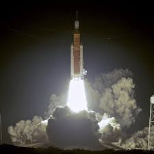

The key components of the mission is it's the crafts, crew and ground based communications team. These three big parts are crucial the craft needs to be able to handle the harsh envoirment of deep space its has to go 238,856 miles away from Earth to the Moon. The Crew has to be very calm and able to work under pressure. and the grounds communications has to be able to have good signal to keep the crew safe and help guide them through any thing goes wrong. This is vital so they can make on the fly changes to code or to help engineer a issue like the time Astronuat Luca Parmitano he had water fill in the hood of his suit and ground control was able to figure out the issue and canceled his space walk.
The Future
There will be long duration stays on the moon will the help of new EVA suits will be ground breaking. It will be stronger than ever for these long stays on the lunar surface. Crew rotations will be involved with the help of the lunar gateway. And then finally Mars the end goal. This system will be used as a refueling station for future space exploration. This tasks that has been provided by Nasa and will change life for humans more than we could imagine.
Learn More From NASA
- NASA Space Launch System Overview
- NASA Orion Spacecraft Overview
- NASA Lunar Gateway Overview
- NASA Human Landing System Overview

